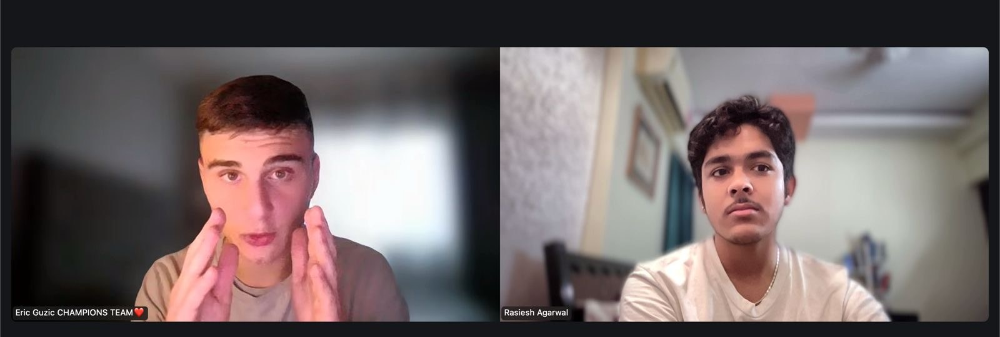

Ageside.ai marked my return to agency-building in September 2024. I worked on the agency through April 2026, moving from digital deliverables toward AI-led services, automation and practical business systems.

The timeline and markets
Across September 2024 to April 2026, my work reached clients and projects connected to Moldova, Ireland and Greece. These markets exposed me to different operating styles, customer expectations and business needs.
There were also two distinct international engagements within that broader period: a UAE engagement from November 2025 to January 2026, and a two-month project in the United States with a Mexican-led cosmetics brand.
The evolution
My earlier agency work focused on media, digital presence and client services. Over time, I became more interested in the operational problems around those services: how leads are captured, how customers are followed up, how work moves through a team and where repetitive tasks can be made easier.
That curiosity helped shape Ageside.ai. I worked with clients and collaborators across Moldova, Ireland and Greece, alongside the separate UAE and US engagements described above. Working across borders exposed me to different customer expectations and business contexts. It also taught me that the best technology solution starts with listening carefully to the people who will use it.
A UAE laundry operations system
One of the most hands-on projects was a custom AI-supported system for a laundry client in the UAE. The brief required understanding a multi-step service operation and translating it into a digital workflow. The project connected customer and order information with the practical needs of the business.
It reinforced that AI is not valuable because it sounds advanced. It is valuable when it reduces friction, makes information easier to act on and fits the reality of the people using it.
The transition
At a later stage, I returned to India with my agency partners. The agency and the associated project rights were transferred to a UAE consultancy. I see this as a significant transition in my journey: an opportunity to understand handover, ownership, continuity and the work required to move a service operation into another organisation.
Start with the workflow, not the tool. Understand the people involved. Design for everyday use. Make the system useful before making it impressive.